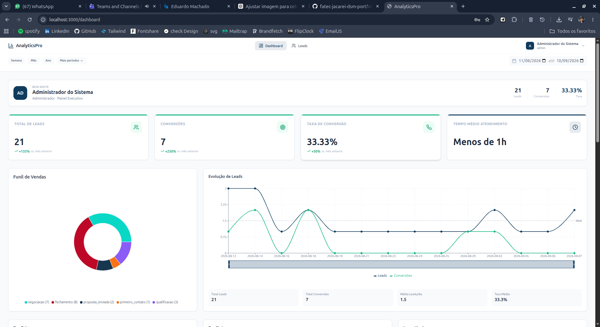
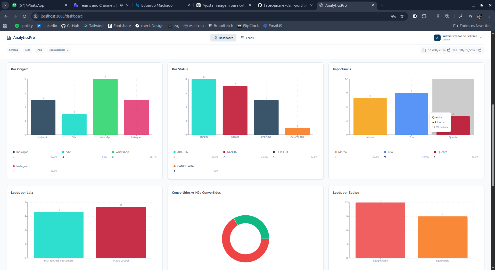
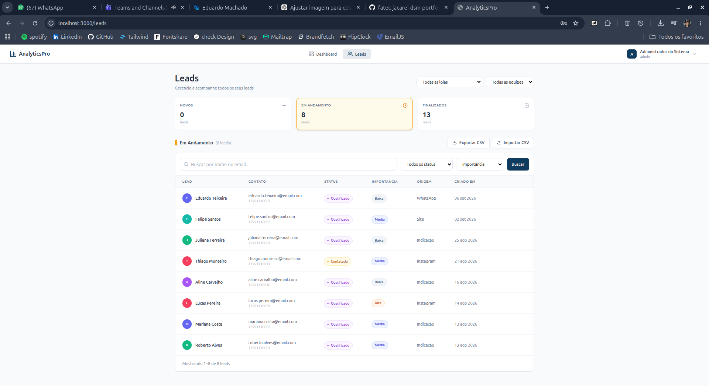
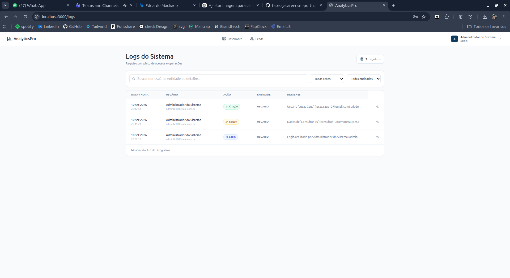

Olá, eu sou Pedro Henrique
Desenvolvedor de Software Multiplataforma
Estudante da FATEC-SP apaixonado por tecnologia, com foco em desenvolvimento web e busca por soluções inovadoras.

Sobre Mim
Sou estudante da Faculdade de Tecnologia de São Paulo - FATEC-SP, cursando Desenvolvimento de Software Multiplataforma. Estou em busca da minha primeira oportunidade — estágio ou posição júnior — na área de Tecnologia da Informação, onde eu possa aplicar e expandir meus conhecimentos em programação e análise de sistemas.
Atuo no desenvolvimento web tanto no front-end quanto no back-end, trabalhando com HTML, CSS, JavaScript, React, TypeScript, Node.js, Python e bancos de dados (SQL e MongoDB). Acredito na aprendizagem contínua, na colaboração e no código como ferramenta de transformação e impacto.
1+
Anos de Estudo
15+
Tecnologias
5
Projetos Desenvolvidos
Projetos
Projetos Acadêmicos
Sistema Web para Consulta de Horários Acadêmicos
Desenvolvemos um sistema web para consulta de horários das aulas de maneira prática e atualizada. Atuei principalmente no front-end com HTML e CSS, além de colaborar na estruturação do banco de dados e na importação via CSV.
Problemática Identificada:
Os horários eram divulgados por murais impressos, gerando retrabalho a cada alteração de professores, disciplinas ou ambientes.
Solução Desenvolvida:
Sistema web com consulta por curso, ambiente, turno e turma, eliminando reimpressões e tornando as informações acessíveis em tempo real.
Telas do Sistema
Aplicação Web para Visualização e Disseminação de Dados Limnológicos
No ABP-2DSM atuei principalmente no back-end, sendo responsável pela criação de algumas APIs, pelos testes de conexão com o banco de dados e pela implementação e validação das rotas. Trabalhei utilizando TypeScript, Node.js e Docker, e também realizei algumas operações com SQL.
Problemática:
Os dados limnológicos eram coletados de diferentes formas:
• Coletas manuais em campanhas no reservatório
• Coletas automáticas pelo SIMA (Sistema Integrado de Monitoração Ambiental)
A descentralização e o grande volume de informações dificultavam a visualização e
compartilhamento dos dados para estudos sobre o balanço de carbono nos reservatórios de Furnas.
Solução Desenvolvida:
Uma aplicação web capaz de consolidar dados manuais e automáticos, organizar por período, tipo e local de coleta, permitindo consultas rápidas e visualizações claras para pesquisadores.
Protótipo da Interface (Figma)

DevFlow CRM — Sistema de Gestão de Leads Comerciais
Plataforma web desenvolvida em parceria com a 1000 Valle Multimarcas, revendedora de veículos com múltiplas unidades, para centralizar, gerenciar e analisar os leads captados por canais presenciais e digitais. Neste projeto atuei como Scrum Master: conduzi as cerimônias da equipe (daily, planning, review e retrospectiva) e acompanhei a evolução das três sprints pelos burndown charts, removendo impedimentos e mantendo o time alinhado com as entregas combinadas com o cliente.
Problemática Identificada:
Os leads chegavam por canais distintos — atendimento presencial, WhatsApp, site, Instagram e indicações — e ficavam dispersos em planilhas e anotações individuais. Sem centralização, a empresa não tinha visibilidade do funil de vendas nem como medir a taxa de conversão por atendente, equipe ou loja.
Solução Desenvolvida:
CRM que unifica a captação em uma única interface, com controle de acesso hierárquico via JWT (Atendente, Gerente, Gerente Geral e Administrador), gestão do ciclo de negociações com histórico de estágios, dashboards operacional e analítico com filtros temporais e logs de auditoria para rastreabilidade total das ações.
Telas do Sistema




Gestão Ágil — Burndown das Sprints
Projetos Pessoais
Aplicação Web de Previsão do Tempo em Tempo Real
Aplicação web que consulta dados climáticos em tempo real de qualquer
cidade, integrando-se à API do OpenWeatherMap. Desenvolvi
o back-end em TypeScript com Node.js e Express, criando a
rota de consulta /weather?city={cidade}, e o front-end com
HTML, CSS e JavaScript, exibindo temperatura, umidade e condições do clima.
Sistema de Gestão para Barbearias
Plataforma completa de gestão para barbearias, com CRUD de barbeiros, clientes, serviços e agendamentos (com controle de status: agendado, confirmado, concluído e cancelado). Construí o back-end em Node.js, TypeScript e Express com banco de dados PostgreSQL, validação de dados com Zod e documentação interativa da API via Swagger (OpenAPI 3.0).
Telas do Sistema
Habilidades Técnicas
Frontend
Backend
Ferramentas
Pacote Office
Outras Informações
Formação Acadêmica
📘 Desenvolvimento de Software Multiplataforma — FATEC-SP (cursando)
Cursos & Certificações
🤖 Domine a IA com prompting responsável — Santander Open Academy (concluído em 05/2025)
Soft Skills
✅ Responsabilidade | 🚀 Proatividade | 🎯 Disciplina | 💪 Empenho | 🤝 Respeito
Hobbies
🎮 Games | 🎵 Música | 💻 Projetos pessoais | 📚 Estudo contínuo